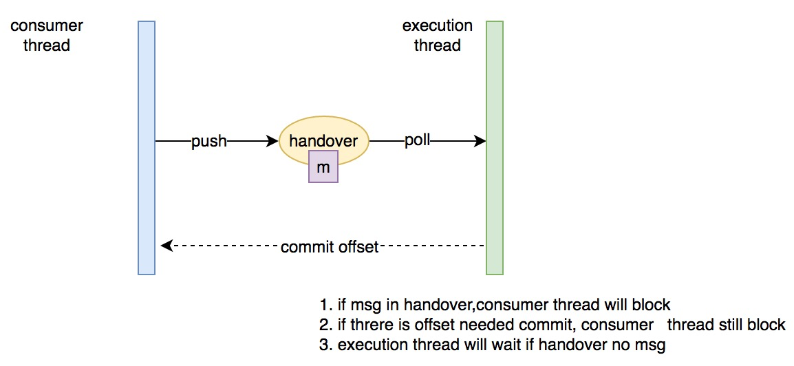

前言
Kafka 作为成熟的消息队列目前在大数据场景中应用的越来越广泛，其高性能与多 producer push 多 consumer pull 的消息流非常适合流式计算场景；同时 kafka 是较好的支持回溯消费的队列之一，为各种流式计算框架设计 at-least-once 甚至 exact-once 语义的计算模型提供了可能
本文将介绍 flink 1.2 的 0.9.0 版本 kafka connector，主要讲解消费模型，快照策略/恢复等，尤其是为什么 flink kafka connector 借助于 flink 内核的分布式快照算法做到了 exact-once 语义
核心组件介绍
先来看下 flink-kafka-connector 都有哪些核心组件以支撑数据访问
先来看下整体的组件继承关系：

从上图可以直观的看出，FlinkKafkaConsumerBase 是核心类，它继承自 SourceFunction 接口，通过运行 run() 方法获取数据，背后又通过维护一个 AbstractFetcher 成员获取数据，AbstractFetcher 维护了一个消费线程 KafkaConsumerThread 来不断与 Kafka 交互；同时我们观察到 AbstractFetcher 为每个消费的 kafka partition 维护了一个状态成员 KafkaTopicPartitionState，用于保存 partition 当前消费到的 offset 以及已经 commit 到 kafka 的 offset 信息
消息及 WaterMark 分发策略
上面我们说到每个 AbstractFetcher 封装了具体的获取数据的逻辑，与此同时，它也提供了三种模式来控制自己生产时间戳 timestamp 和 watermark 的模式：
- NO_TIMESTAMPS_WATERMARKS: fetcher 不生产 timestamp 和 watermarks
- PERIODIC_WATERMARKS: fetcher 阶段性定时生产 watermarks
- PUNCTUATED_WATERMARKS: fetcher 生产标记 watermark 【按照特定的消息字段值触发】
而 对应 这三种不同的模式，AbstractFetcher 会维护三种不同的 KafkaTopicPartitionState：
- KafkaTopicPartitionState: 只维护 partiton 相关信息
- KafkaTopicPartitionStateWithPeriodicWatermarks: 维护了一个 AssignerWithPeriodicWatermarks 引用
- KafkaTopicPartitionStateWithPunctuatedWatermarks: 维护了一个 AssignerWithPunctuatedWatermarks 引用
如前面的继承关系所示，KafkaTopicPartitionState 只维护基本的一些 partition 的信息，而后两者分别维护了获取 partition 的 timestamp 和 watermark 的策略，也就是：AssignerWithPeriodicWatermarks 和 AssignerWithPunctuatedWatermarks
AbstractFetcher 通过 run() 方法来获取数据，run() 方法又会调用其 runFetchLoop() 方法来不断拉取数据。Kafka09Fetcher 作为 AbstractFetcher 的实现类之一，其重载的方法 runFetchLoop() 会先启动消费线程 KafkaConsumerThread，后不断 while 循环从 HandOver poll 数据，【这一块的消费模型我们后面介绍】，接着将这些数据发送给下游算子，发射的逻辑封装在 AbstractFetcher 的方法 emitRecord():
|
|
我们可以看到，依据生产时间戳 timestamp 和 watermark 的模式的不同，会走不同的发射逻辑，我们只分析 PERIODIC_WATERMARKS 和 PUNCTUATED_WATERMARKS 两种策略
消息分发策略
不管是 PERIODIC_WATERMARKS 还是 PUNCTUATED_WATERMARKS 策略，均会做这两件事情：
- 通过调用
sourceContext.collectWithTimestamp()来收集消息和时间戳 - 将消息对应的 offset 信息保存到对应的 KafkaPartitionState【有不同实现类型】
那么问题的关键就是 sourceContext，SourceContext Interface 被定义在 SourceFunction 中作为嵌套 Interface，它统一管理源算子的消息和 watermark 的发送
那么 SourceContext 都有哪些具体的类型呢？通过什么方式来控制？
在 StreamSource 的 run() 方法中，我们看到有这样的逻辑：
|
|
可以看到 StreamSource 的类型主要通过 timeCharacteristic 来控制:
|
|
我们这里列一下不同的 时间特性 下的 collect 策略：
- EventTime: 直接按照传入的 element 和 timestamp 封装成 StreamRecord emit 出去
- IngestionTime: 将传进来的 timestamp 丢弃，并采用当前的系统时间赋给 StreamRecord emit 出去，同时会 check 当前的系统时间是否达到下次 watermark 的触发时间，如果达到会 emit 一个 watermark 到下游，同时 AutomaticWatermarkContext 会注册一个 timertask，按照 watermark 的间隔时间定时 check 系统时间，如果达到触发 watermark 的条件也会发射一个 watermark 到下游，设置两个触发逻辑的目的是尽量保证 watermark 在符合条件时 及时 触发发送到下游
- ProcessingTime: 直接将传入的 element 封装成 StreamRecord 发射到下游，忽略传入的时间戳
WaterMark 策略
其实上面再介绍 IngestionTime 的时候已经介绍了一部分的 watermark 的触发策略，毕竟 StreamSource 是控制消息和 watermark 发射的总入口，影响 watermark 发射的最终逻辑一共有两个：
- 时间特性：IngestionTime 时间处理特性下 StreamSource 会定时触发 watermark 的发射
- 用户指定的 watermark 特性：前面介绍的三种
现在我们再回到 AbstractFetcher，来看下用户指定不同的 watermark 特性对 watermark 发射的影响
PERIODIC_WATERMARKS
如果用户指定这样的 watermark 特性，AbstractFetcher 会另起一个 timertask，按照 watermark interval 去定时调用 SourceContext 的 emitWatermark() 接口，我们看 SourceContext 的实现可以知道，只有 EventTime 对应的 ManualWatermarkContext 才会将 watermark emit 出去，其它会自动忽略掉
也就是说 PERIODIC_WATERMARKS 策略搭配 EventTime 的时间处理特性才有意义
这里获取的 watermark 是当前所有消费 partition 的 KafkaPartitionState 获取到的 watermark 时间的最小值，是和消息本身相关联的
ps: 个人觉得 AutomaticWatermarkContext 的 watermark 策略应该统一移到 PERIODIC_WATERMARKS。这样模块划分更清晰，用户也更容易理解，不过 flink 这么安排也是有它的合理性：PROCESSING_TIME 时间处理特性下，用户只关心源算子当前的处理时间，和消息本身无关，所有由 AutomaticWatermarkContext 统一控制
PUNCTUATED_WATERMARKS
如果指定 PUNCTUATED_WATERMARKS 作为 watermark 特性，也就是用户依据消息中的触发字段来触发 watermark，这时候发射逻辑如下：
- 用户每读取一条消息，就判断是否可以出发 watermark
- 如果可触发，获取每个 partition 的 watermark 并取时间戳最小的 watermark
- 如果这个最小时间戳大于上次发射的 watermark 的时间戳，则通过 SourceContext 发射出去
由上面分析可以知道，PUNCTUATED_WATERMARKS 也是只对 EVENT_TIME 时间特性有意义
Checkpoint 及恢复
快照策略
策略集中在 FlinkKafkaConsumerBase 的 snapshotState() 方法中，
发起快照策略
- 清空之前的快照状态
- 从维护的 KafkaTopicPartitionState 获取每个 partition 当前 处理到的 offset
- 记录下来用于后面 commit 到 kafka 用
- 将 offset 信息快照到状态存储
一轮快照结束后的 commit 策略
将之前快照的 offset 通过 AbstractFetcher commit 到 kafka
ps: AbstractUdfStreamOperator 管理了快照背后的逻辑 [ 存储及序列化 ]
恢复策略
从状态存储中恢复之前快照的 offset 信息并 set 到对应的 KafkaTopicPartitionState 中
HandOver
前面提到消息的消费是由 fetcher 中的 HandOver 和 KafkaConsumerThread 共同完成的，有的同学可能有疑问，KafkaConsumerThread 直接消费就好，为什么要有一个 HandOver 呢？
HandOver 的存在有两个目的：
- 控制消费队列的大小
- 不会阻塞 offset commit 到 kafka 的逻辑
HandOver 实际是一个锁控制器，当它收到 commit offset 请求时会优先处理 commit 的逻辑，同时如果 HandOver 中有未消费的一批消息，会阻塞消费线程的消费
附一张图：
